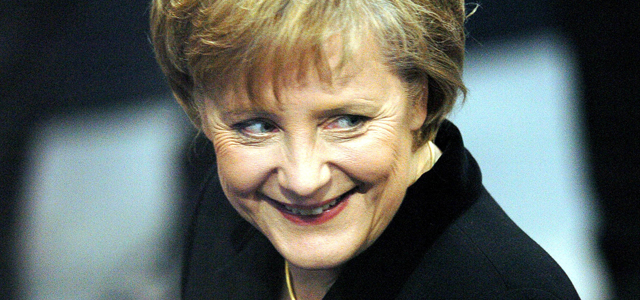
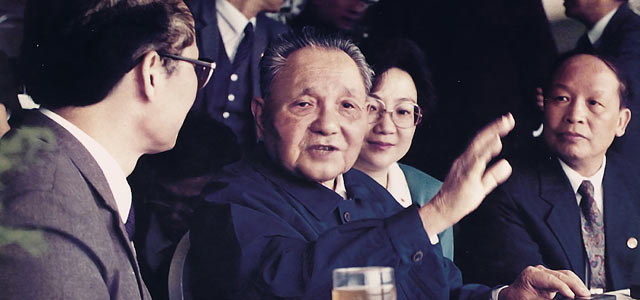

一、左右轮播，滚动持续0.6秒，滚动延迟3秒，滚动效果swing，初始焦点第1张，点选按键自动隐藏，按键边框半径（IE8-只方不圆）5px（以上各项为默认设置值）


二、上下轮播，滚动持续0.3秒，滚动延迟5秒，滚动效果linear，初始焦点第2张，点选按键自动隐藏
三、左右轮播，滚动持续0.3秒，滚动延迟5秒，滚动效果linear，初始焦点第1张，点选按键不隐藏，按键边框半径10px（圆形）
四、隐藏底栏
五、
想下载，就可个劲儿的点我:)
爱我的老婆孩子！香港回归祖国15周年献礼，哈哈！！